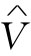

…（而不是用
…）来写出方程，但得记住，时间的变化是由式（22.2）给出的。
…（而不是用
…）来写出方程，但得记住，时间的变化是由式（22.2）给出的。在本课程中，我们的大部分工作目的在于与完整的麦克斯韦方程组相联系。在以上两章中，曾讨论了这些方程的重要结果。我们已经清楚，那些方程含有以前所算出的一切静态现象，以及在第1卷中就已相当详尽地谈及的那些有关电磁波和光的现象。麦克斯韦方程组给出上述两方面的现象，这些现象取决于人们所计算的场是靠近电流和电荷还是远离它们。对于中间的区域则没有什么有意义的东西可说，那里并未出现什么特殊现象。
然而，在电磁学中还有几个课题有待我们去处理。我们将要讨论有关相对论和麦克斯韦方程组的问题——即当人们相对于运动坐标系而观望那麦克斯韦方程组时所发生的情况，以及关于在电磁系统中的能量守恒问题，还有关于材料电磁性质的广泛课题。迄今为止，除了对于电介质的特性有过一点研究以外，我们只讨论过自由空间中的电磁场。而且，尽管在第1卷中我们已相当详尽地谈及光学的课题，但还有几件事情我们很想从场方程的观点出发重新讨论。
特别是要重新考虑有关折射率的课题，尤其是关于稠密材料方面的问题。最后，还要考虑与局限于一有限空间区域里的波相联系的现象。我们过去曾在研究声波时简单接触过这类问题。麦克斯韦方程组也导致表示电场和磁场约束波的那些解。我们将在以后某些章节中考虑这一具有重要技术应用的课题。为了引导到该课题上去，我们将从考虑低频时的电路特性着手。然后就可对下述两种情况进行比较：一种是麦克斯韦方程组的准静态近似适用的情况，而另一种则是高频效应占优势的情况。
因此，我们就将从上面几章中那巍峨而险峻的高峰降回到相对低水平的电路课题上来。然而将会见到，即使这么一个世俗课题，只要足够详细地加以考察，也能发现它包含极大的复杂性。
我们已在第1卷第23和25两章中讨论过电路的某些性质。现在再来重复其中某些内容，但会详细得多。我们将再度只同一些线性系统和全都按正弦形式变化的电压和电流打交道，这时，应用第1卷第23章中所描述的那种指数函数符号，就可应用复数来表示所有的电压和电流。于是，一个随时间变化的电压V（t）就将被写成
（22.1）
式中 代表一个与t无关的复数。当然，实际上随时间变化的电压V（t）是由上式右边的复数函数的实部 给出的。
同样，所有其他随时间变化的量也都将被视作以相同的频率ω按正弦形式变化。因此，我们写出
等等。
多半时间我们将用V，I，
…（而不是用
…）来写出方程，但得记住，时间的变化是由式（22.2）给出的。
在以往的电路讨论中曾经假定，像电感、电容和电阻这种东西你们都已熟悉。现在要来稍微详尽地看看这些所谓理想电路元件指的是什么。我们将从电感开始。
电感是这样制成的，即把许多匝的导线绕成一个线圈形式，并从其两端接至距离线圈相当远的接头上去，如图22-1所示。我们要假定，由线圈中电流所产生的磁场并未强烈地向外扩展到全部空间，从而不会与电路的其他部分发生相互作用。通常可以这样安排，把线圈绕成一个环形的式样，或把线圈绕在某一块适当的铁芯上，从而约束磁场，或通过把线圈放在某一个适当的金属盒之内，如图22-1所简略指明的那样。在任何情况下，我们都假定，在端点a和b附近的外部区域里仅有微不足道的磁场。我们也要假定，可以忽略线圈导线里的任何电阻。最后，还将假定，那些出现在导线表面上用以建立电场的电荷量是可以忽略的。

图22-1 电感
具备了所有这些近似性，就可以有一个所谓“理想”电感（以后我们还会回过头来讨论在实际电感中所发生的事情）。对于理想电感，我们说它的端路电压等于L（dI/dt）。现在来看看为什么会这样？当有电流通过电感时，正比于这个电流的磁场在线圈内部便建立了起来。若电流随时间变化，则这磁场也会变化。一般说来，E的旋度等于dB/dt；或者换句话说，E环绕任何闭合路径的线积分等于穿过该回路B通量的变化率的负值。现在假设我们考虑下述路径：由端点a开始沿线圈（总是保持在导线之内）抵达端点b，然后在该电感外面的空间经过空气从端点b回到端点a。E环绕这一闭合路径的线积分可以写成两部分之和：
正如以前已经了解的，在一理想导体内部不可能有电场（最微小的场都可能产生无限大的电流）。因此，从a至b经由线圈的积分等于零。E线积分的整个贡献都是来自该电感外面从b至a的那一段路径。既然我们已经假定，在该“盒子”外面的空间里不存在磁场，则这部分积分就与所选取的路径无关，因而我们可以对两端的电势下定义。这两端电势的差就是所谓的电压差或简称为电压V，因而我们有
这整个线积分以前曾称为电动势
，当然也就等于线圈里磁通量的变化率。我们早已明白，这一电动势与电流的负变化率成正比，因而就有
式中L是线圈的自感。由于dI/dt=iωI，所以我们有
V=iωLI. （22.4）
描述理想电感的方法，举例说明了解决其他理想电路元件——通常称作“集总”元件——的一般方法。这些元件的性质完全由出现在两端点处的电流和电压来描述。通过做些适当近似，就有可能忽略那些出现在物体内部的场的巨大复杂性，在内部与外部发生的事情之间划清了界限。
对于一切电路元件，我们都会找到一个像式（22.4）那样的关系式，其中电压正比于电流，而其比例常数一般说来都是一复数。这个复值比例系数称为阻抗 ，并通常写为z（不要同z坐标混淆起来）。它一般是频率ω的函数。因此，对于任何集总元件来说就可以写出
（22.5）
对于电感则有
z（电感）=zL =iωL. （22.6）
现在让我们从同样观点来看看电容 [1] 。一个电容器包括两块导电板，并各自引出导线至适当的终端。这两块板可以有任何形状，并且通常由某种介电材料隔开。我们大略地把这样一种情况画在图22-2上，再做出几个简化假定。首先，假定板和导线都是理想导体。其次，假定两板间的绝缘相当完美，以致不会有电荷能够通过该绝缘物质从一板流至另一板。再其次，假定这两块导体互相靠近但远离其他一切导体，以致所有离开其中一板的场线都将终结在另一板上。这样，在两板上的电荷就将永远等量异号，而在板上的电荷比起那些在接线表面上的要多得多。最后，我们假定在该电容器附近不会有磁场。
图22-2 电容
现在设想考虑E环绕下述回路的线积分，即从端点a开始，沿导线内部达到该电容器的上板，然后越过两板之间的空间，又从下板通过导线而到达端点b，并在电容器外面的空间返回到端点a。由于没有磁场，所以E绕这个闭合路径的线积分就是零。这个积分可以分成三部分：
沿导线的积分为零，因为在理想导体里不存在电场。在电容器外面从b至a的积分等于在两端点间的电势差的负值。由于我们设想这两块板总是孤立于世界上其他部分的，故在这两块板上的总电荷就必须为零；如果上板有电荷Q，则在下板会有相等而相反的电荷-Q。以前我们已知道，若两导体拥有相等而相反的电荷，即正负Q，这两板间的电势差就会等于Q/C，其中C称为这两个导体的电容。根据式（22.7），a和b两端点间的电势差等于两板间的电势差。因而我们有
从端点a进入（并从端点b离开）电容器的电流I等于dQ/dt，即板上电荷的变化率。把dV/dt写成iωV后，便可按照如下方式写出电容器的电压与电流的关系：

图22-3 电阻
我们要考虑的第三种元件是电阻。可是，由于还没有讨论过实际材料的电学性质，所以我们不准备谈论在真实导体内部发生的事情。因此，只好接受这样一个事实，即在真实材料内部会有电场存在，而这些电场能够引起电荷流动——也就是说，产生了电流——并且这个电流与电场从导体的一端至另一端的积分成正比。然后，我们设想一个按照简图22-3建立起来的理想电阻。两条被认为由理想导体构成的导线分别从a点与b点连接至一根电阻性材料棒的两端。根据我们常用的论证方法，两端点a和b间的电势差等于外电场的线积分，而这也等于通过电阻性材料棒的电场的线积分。从而得出通过该电阻的电流I与端电压V成正比：
式中R称为电阻。以后我们还将看到，对于实际导电材料，电流与电压间的关系只近似为线性。我们也将看到，这一近似的正比性只有当频率不太高时才被预期与电流和电压的变化频率无关。于是，对交变电流来说，跨越电阻的电压与电流同相位，这意味着该阻抗是实数：
z（电阻）=zR =R. （22.10）
关于三种集总电路元件——电感、电容和电阻——的上述结果，我们将其概括在图22-4中。在该图中，以及在上面那些图中，我们都用一个从一端指向另一端的箭头来表明电压。如果电压是正的——也就是说，端点a比端点b处于较高 的电势——那么该箭头便指向一个正“电压降”的方向。
图22-4 理想的集总电路元件（被动的或无源的）
尽管我们现在所谈的是交流电，但当然也可通过取频率ω趋于零的极限而包括载有稳恒电流电路的特殊情况。对于零频率——也即对于直流——来说，电感的阻抗趋于零；它变成短路了。对于直流，电容器的阻抗趋于无限大；它变成断路了。由于电阻的阻抗与频率无关，所以它是分析一个直流电路时唯一遗留下来的元件。
迄今为止所描述过的那些电路元件中，电流与电压都是相互成比例的。倘若其中一个等于零，另一个也同时为零。我们往往会这样想：一个外加电压是造成电流的“原因”，或者电流会引起两端点间的电压，因此，在某种意义上，元件是会对所“施”的外部条件发生“响应”的。由于这一原因，这些元件便称为被动元件 （或无源元件）。这样，与它们形成对照的是，即将在下节讨论的、作为电路中的交变电流或电压之源 的、诸如发电机那一类的主动元件（或有源元件）。